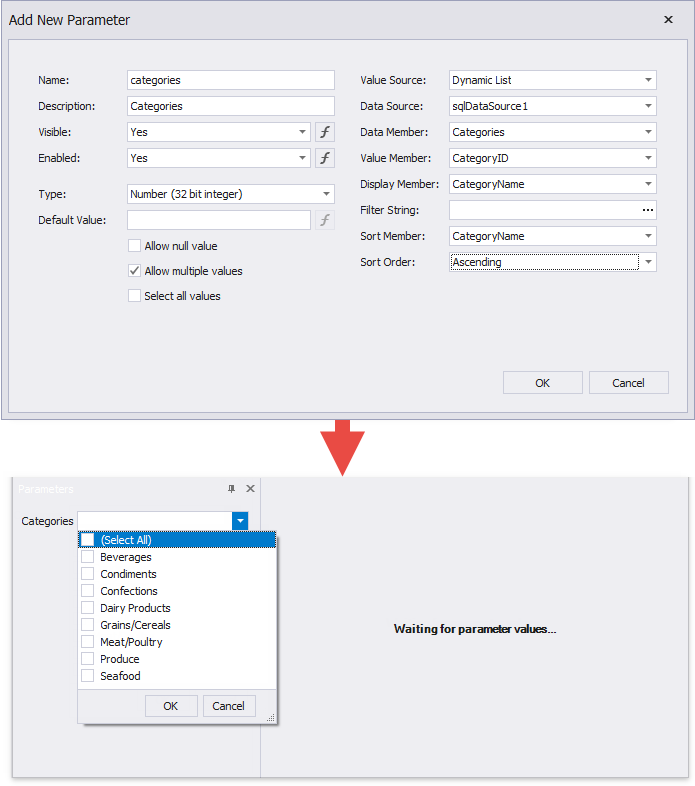
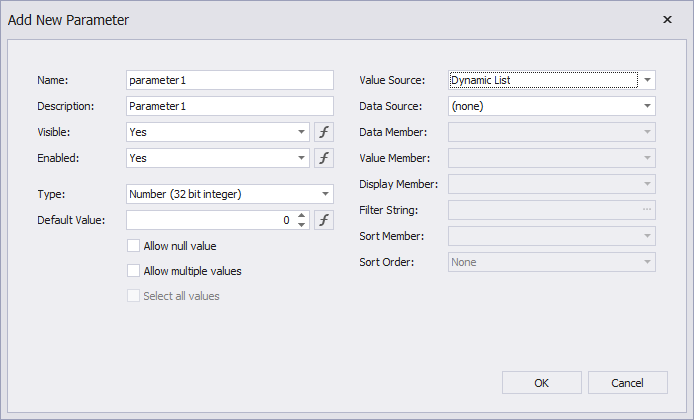
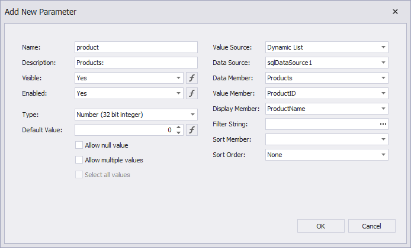

Report Parameters with Predefined Dynamic Values
You can create a report parameter that uses a list of values from a data source. When you open a report's Print Preview, you can select a value from this list in the Parameters panel.

Create a List of Predefined Values in the Report Designer
Follow the steps below to create a parameter with a list of dynamic values in the Report Designer:
Create a report parameter as described in this topic: Create a Report Parameter.
Set the parameter's Value Source option to Dynamic List. Additional fields appear in the Add New Parameter dialog and allow you to specify a data source for parameter values.

Specify the Data Source, Data Adapter (for a DataSet only), and Data Member options. Value Member defines a data field that supplies values to the parameter. Display Member defines a data field that stores value descriptions displayed in the Parameters panel.

Note
The data member's value type should match the specified parameter Type.
Use the Filter String property to filter parameter values or implement cascading parameters. Specify the Sort Order and Sort Member properties to sort parameter values in the Parameters panel's editor.